Research Associate
(Ph.D. Candidate)
강남세브란스 AI Technology Hub · 연세대
환자 맞춤형 딥러닝으로 MR 유도 방사선치료용 3D cine MRI의 공간·시간 해상도를 높입니다.
SeoulAI로 현실의 어려운 문제를 푸는 연쇄 창업가이자 기술 리더입니다. AI 솔루션 회사를 창업해 엑싯했고, 영화 CG 파이프라인에 생성형 AI를 들여왔습니다. 지금은 연세대에서 MR 유도 방사선치료를 위한 3D cine MRI 고해상도화를 연구합니다.
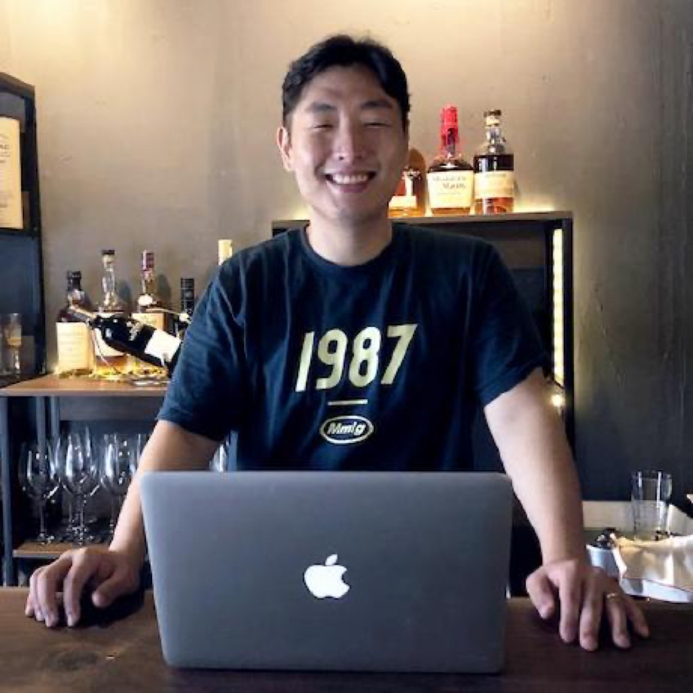
병원 연구실, 영화 CG 스튜디오, 대학원 강의실, 학회를 오가며 동시에 네 가지 일을 하고 있습니다.
환자 맞춤형 딥러닝으로 MR 유도 방사선치료용 3D cine MRI의 공간·시간 해상도를 높입니다.
Seoul영화 CG 파이프라인 전반에 생성형 AI를 도입해 복잡한 공정을 줄이고, 아티스트의 선택지와 제작 효율을 크게 높였습니다.
Hồ Chí Minh City인공지능융합교육 프로젝트에서 교육 현장의 AI 활용을 주제로 대학원 과정을 가르칩니다.
Cheongju국내 AI 연구자·실무자 커뮤니티 학회의 이사로 활동합니다. AI·SW 마에스트로 멘토도 함께 맡고 있습니다.
DaejeonIoT 하드웨어, 모바일 시선 추적, 그로스 해킹, 엔터프라이즈 AI, 생성형 영상을 거쳐 의료 영상까지 왔습니다. 스크롤하면 연도가 따라옵니다.
환자 맞춤형 딥러닝으로 MR 유도 방사선치료를 위한 3D cine MRI의 공간·시간 해상도를 끌어올리는 방법을 개발합니다.
2023년부터 창의AI연구회 부회장으로 활동했고, 2026년 이사로 선임되었습니다.
회사의 영화 CG 파이프라인 전반에 생성형 AI 도입을 이끌고 있습니다. 복잡한 워크플로를 단순화하는 새 기법을 만들고, 아티스트의 표현 범위와 제작 효율을 크게 넓혔습니다.
교육에 AI를 적용하는 대학원 과정을 가르칩니다.
포스코이앤씨, 대우건설, 삼성전자서비스 등 엔터프라이즈 고객을 위한 AI 솔루션을 개발·배포해 운영 효율을 높였습니다.
EXIT · OPIM Digital 인수 · 약 ₩2B ($1.4M)이탈 예측 모델과 CAC/LTV 분석으로 예산 배분을 이끄는 풀퍼널 마케팅 최적화 프레임워크를 만들어 고객 유지율을 높였습니다.
누구나 따라 할 수 있는 전문가 수준의 AI·프로그래밍 튜토리얼과 협업으로 채널을 구독자 5만 명 이상으로 키우고, 충성도 높은 학습 커뮤니티를 만들었습니다.
50,000+ SUBSCRIBERS일반 스마트폰 카메라로 동작하는 모바일 시선 추적 솔루션을 이끌었습니다. 실시간 CNN 모델 R&D부터 iOS·Android용 고성능 크로스플랫폼 SDK까지 맡았습니다.
글로벌 IoT 스마트 폐기물 관리 플랫폼의 풀스택을 총괄했습니다. 자체 센서 펌웨어, 확장 가능한 마이크로서비스 백엔드, 데이터 기반 수거 경로 최적화 앱까지 담당했습니다.
홈 데코·인테리어 소셜 플랫폼을 만들어, 사용자들이 꾸밈 아이디어를 공유하고 발견하는 활발한 커뮤니티로 키웠습니다.
생성형 AI 영상 파이프라인을 직접 만들고, 그걸로 단편을 연출합니다. 칸 시리즈 페스티벌(CANNESERIES) 8회에서 AI 기술 상영과 발표를 했습니다.
→ 스크롤해서 넘겨 보기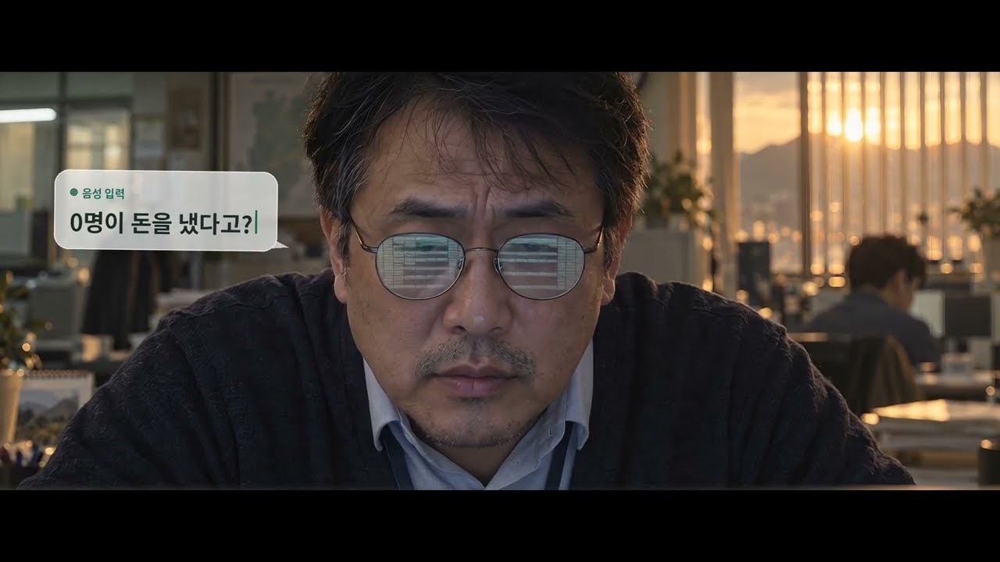
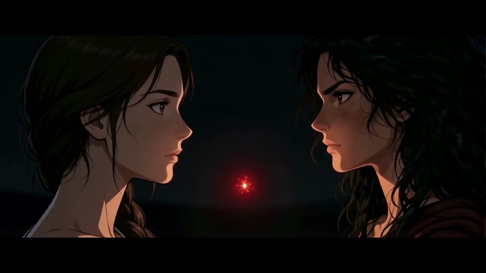
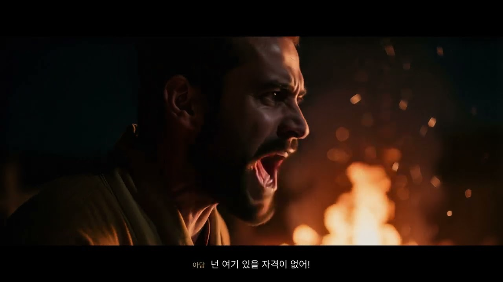
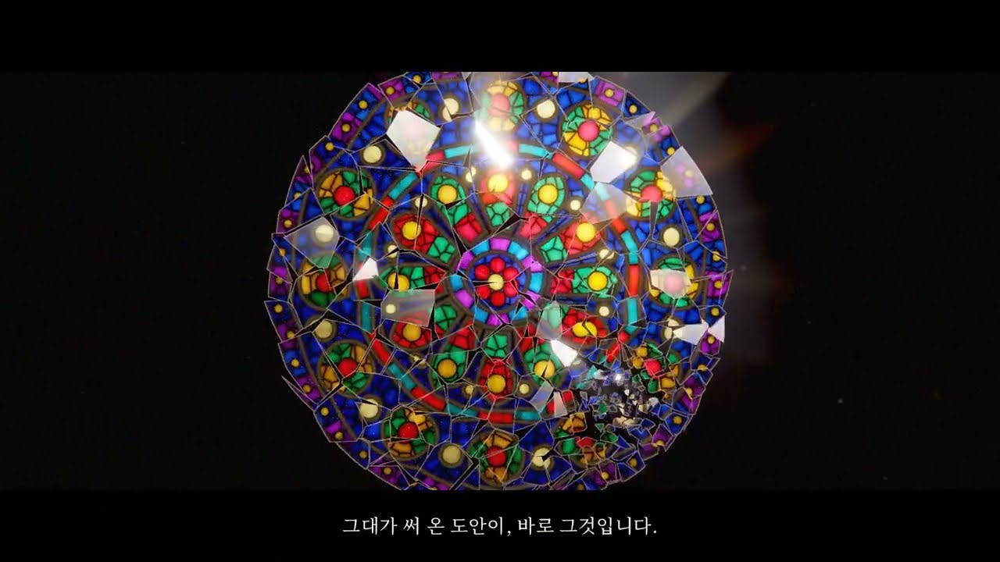
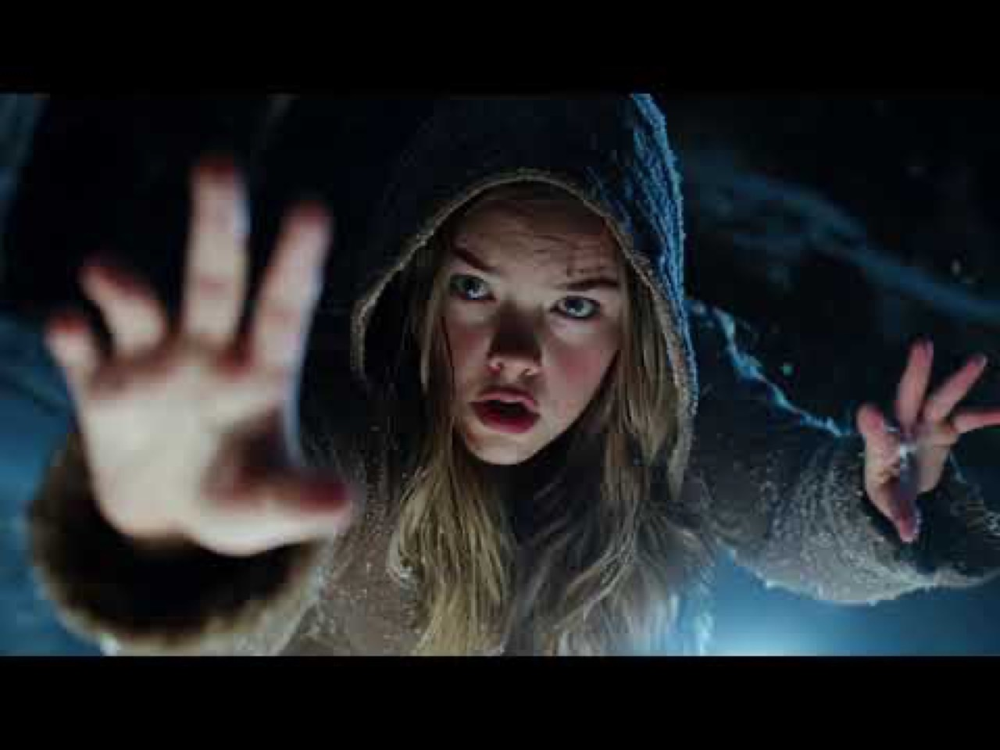
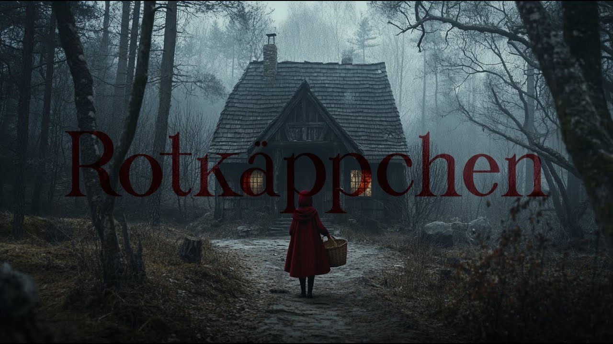
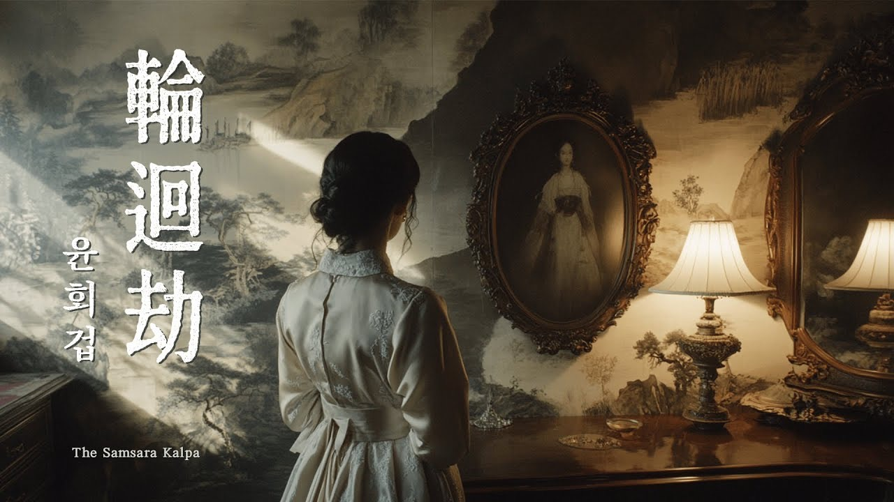
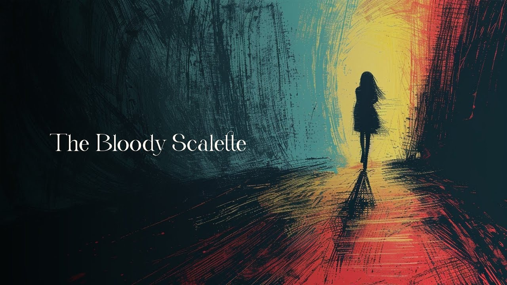
유튜브에서 소개한 프로젝트 대부분은 코드까지 공개했습니다. 고양이에게 안경 씌우기부터 골프 자세 코치, 사투리 TTS, 논문 요약 쇼츠까지.
의료 영상(MRI 미세출혈 검출, 커넥톰), 산업 문서 이해(P&ID 지식 그래프), 한국어 DSL, 생성형 VFX까지.
MR-Linac에서는 방사선을 쏘는 동안 종양이 숨에 따라 움직입니다. 실시간 cine MRI는 빠른 대신 해상도가 낮습니다.
환자 한 명의 데이터로 학습하는 patient-specific 딥러닝으로, 3D cine MRI의 공간·시간 해상도를 함께 끌어올리는 방법을 연구합니다. 지도교수 김지훈 교수 · HEART Lab · 2028년 졸업 예정.
2019년부터 100회가 넘는 강연과 기업 교육, 해커톤 심사와 멘토링을 해 왔습니다. 그중 몇 장면입니다.
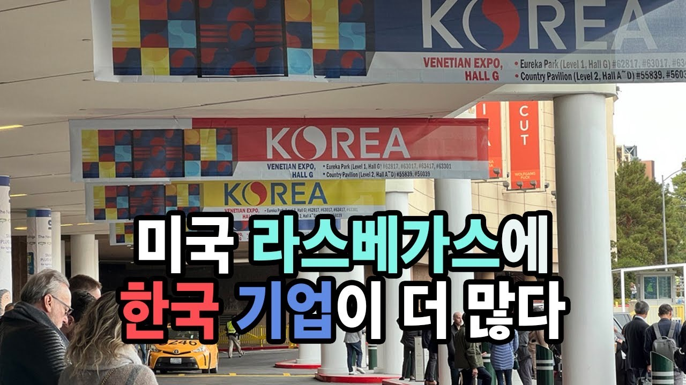
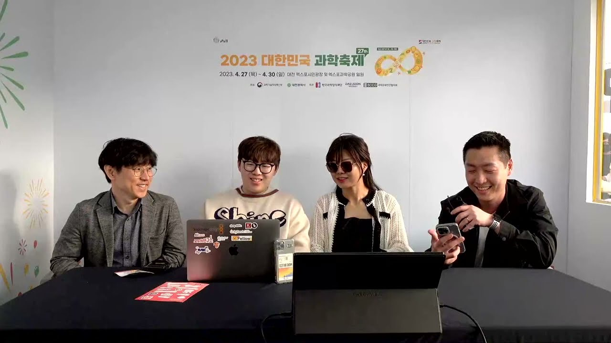
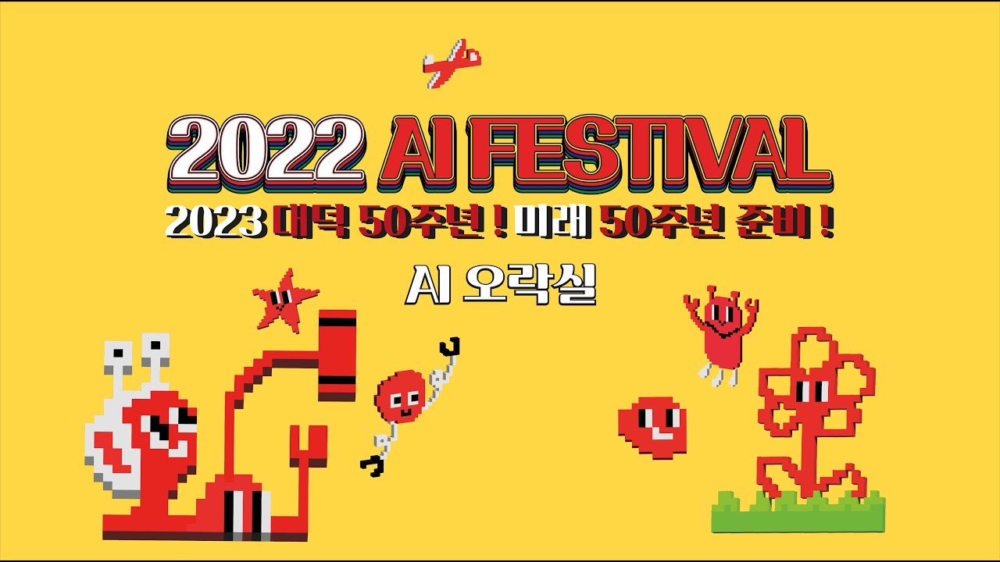
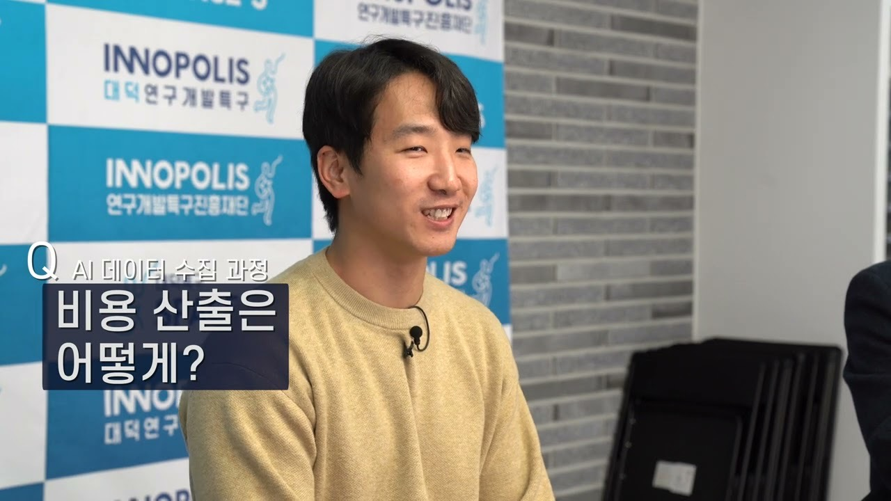
전자공학에서 시작해 컴퓨터과학을 거쳐 의학물리로. 하드웨어부터 모델, 임상까지 이어지는 길입니다.
연세대학교 · HEART Lab
지도교수 김지훈
연세대학교
성균관대학교
사업, 연구, 개발 이야기라면 언제든 환영합니다.